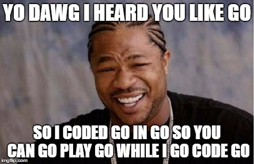

Michal Paszkiewicz
#3 year of languages - go
So, I decided to try go - a cool programming language developed by google.
This language has been on my mind ever since some silly recruiter tried to recruit me for a golang job after looking through my github repositories and stumbling on the "go" project. He clearly hadn't looked very carefully, because:
- It wasn't written with golang - it was an implementation of the game "go"
- A large part of the functionality has been broken since before then, due to the PeerJS maintainers discontinuing their service and the fact I have been to lazy to fix it up
I've decided to confuse matters a little more - I've written a crude console app for playing the game "go" in golang.
I followed the following tutorials:
What I like about go
I really like being able to easily return multiple values from a single function. It feels very neat.
package main
import "fmt"
func getSomeNumbers() (int, int, int){
return 6, 9, 42
}
func main(){
a, b, c := getSomeNumbers()
fmt.Println(a, b, c)
}
I also like the way errors are handled in go. Developing in go felt like I was forced to think about what I should do if an error occurs - I wasn't allowed to leave it till later (and obviously forget about it). They have clearly thought this aspect out and I look forward to seeing other languages eventually adopt this approach.
Furthermore, I enjoyed the tooling available in Visual Studio Code for go. It was ridiculously annoying at first, popping up at the top with suggestions for things I should download and not understanding that when I closed these suggestions, I wanted them to stay closed. However, I eventually succumbed to the pressure and downloaded all these extra things. They instantly improved my productivity and I can say they changed development in go from an interesting project to a whole load of fun.
published: Mon Feb 06 2017